Ahora / Plot Twist Collective
La landing vigente reutiliza esta identidad, sus controles y acciones. Ver la landing real · Ver el formulario inline. Los componentes de venta que siguen documentan el catálogo anterior.

Una segunda vida.
Un nuevo giro.
 REUSAR. REDESCUBRIR. REINVENTAR.
REUSAR. REDESCUBRIR. REINVENTAR.01 / Color con carácter
Base cálida. Acentos eléctricos. Contornos negros.
Colores funcionales & transparencias
Foco, selección, texto, descuentos, capas y sombras.
02 / Tres voces, un sistema
Cosas lindas.
Historias nuevas.
Encontrá algo que te encante.
Dale un lugar en tu próxima historia.
CATÁLOGO / MAR DEL PLATA
ABCDEFGHIJKLMN · 0123456789
03 / Una identidad que se reconoce
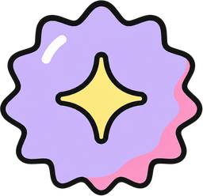
Bordes firmes, sombras sólidas y etiquetas tipo cinta. Una expresión cercana y lúdica, con información clara.
04 / Iconografía completa
25 iconos originales · categorías, acciones y servicios.
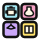
05 / Componentes reales
Capturas del catálogo · estilos originales · datos ilustrativos.
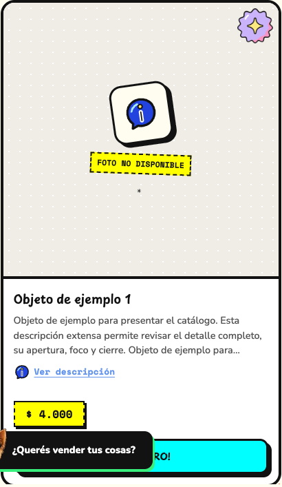
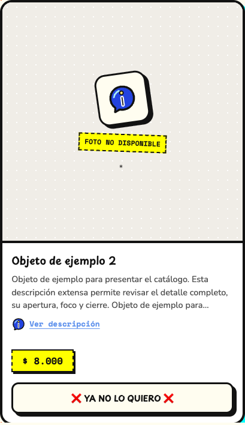
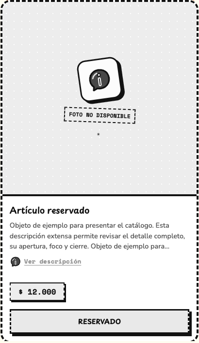
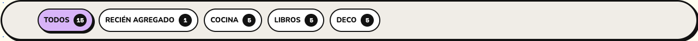
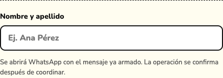
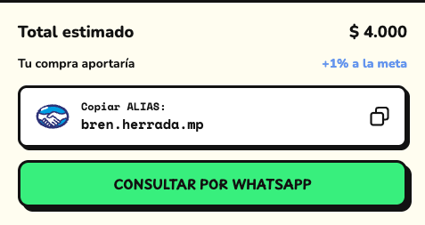
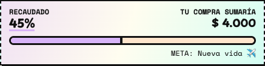
06 / Popups & superficies reales
Las capturas muestran la variante correspondiente al ancho de pantalla.
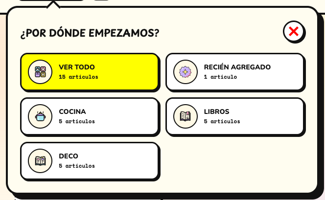
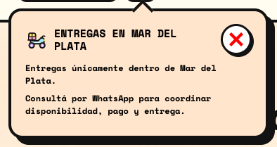
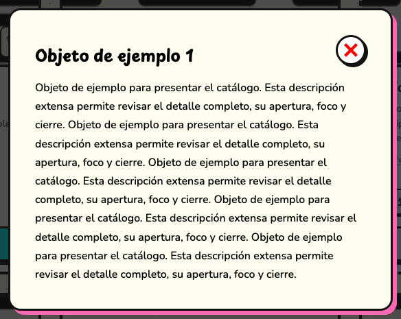
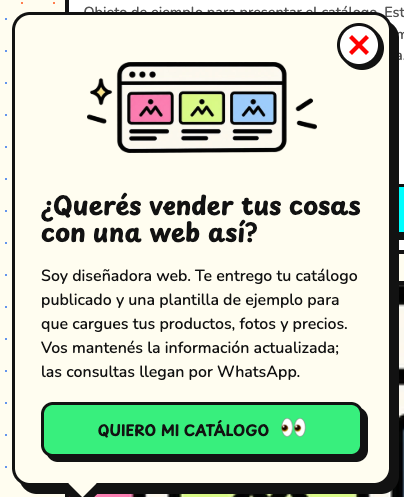
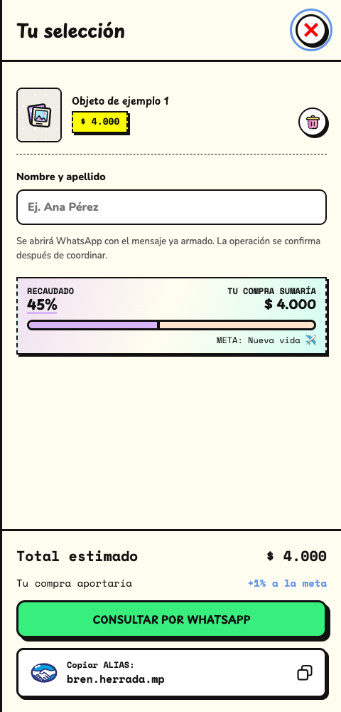
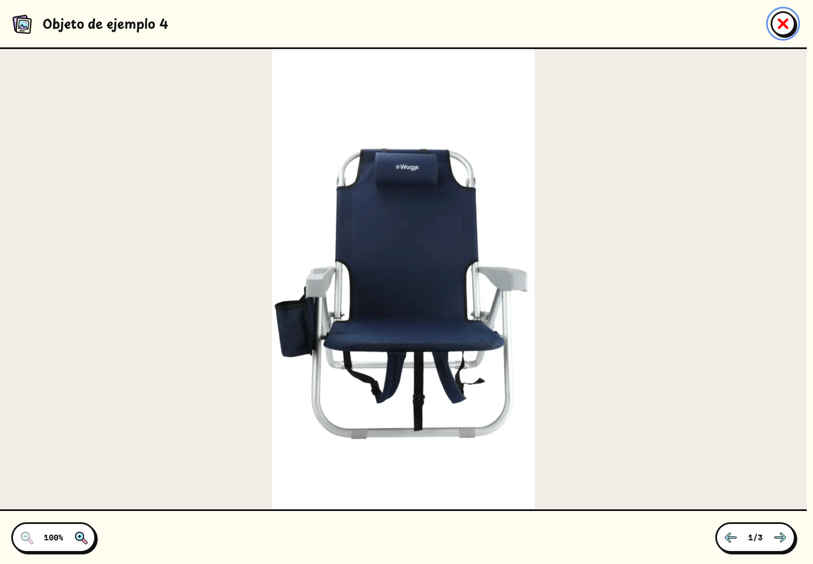
07 / Movimiento del catálogo
La demostración ejecuta app.js, navigation.js y los estilos originales.
- Descripción & invitación
- Pop de 360 ms · curva cubic-bezier(.2,.8,.25,1).
- Categorías & entregas
- Popover anclado de 500 ms. Categorías mobile usa el diálogo inferior nativo del catálogo.
- Selección
- Panel lateral de 240 ms · overlay de 200 ms.
- Galería
- Apertura de 240 ms · cambio de foto por fundido de 240 ms · zoom de 220 ms.
- Botones
- Feedback compartido de 400 ms, con las excepciones propias de cada control.
- Movimiento reducido
- Se conserva exactamente el tratamiento del catálogo, incluido el feedback sin recorrido.
Las capturas son estáticas. Para revisar apertura, cierre, reversa, zoom y navegación, usá la demostración interactiva. Sus datos están aislados: no modifica tu selección real ni envía consultas.
Abrir demostración del catálogo